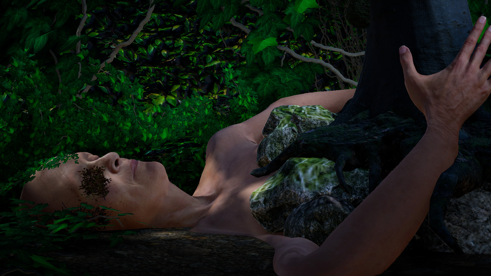
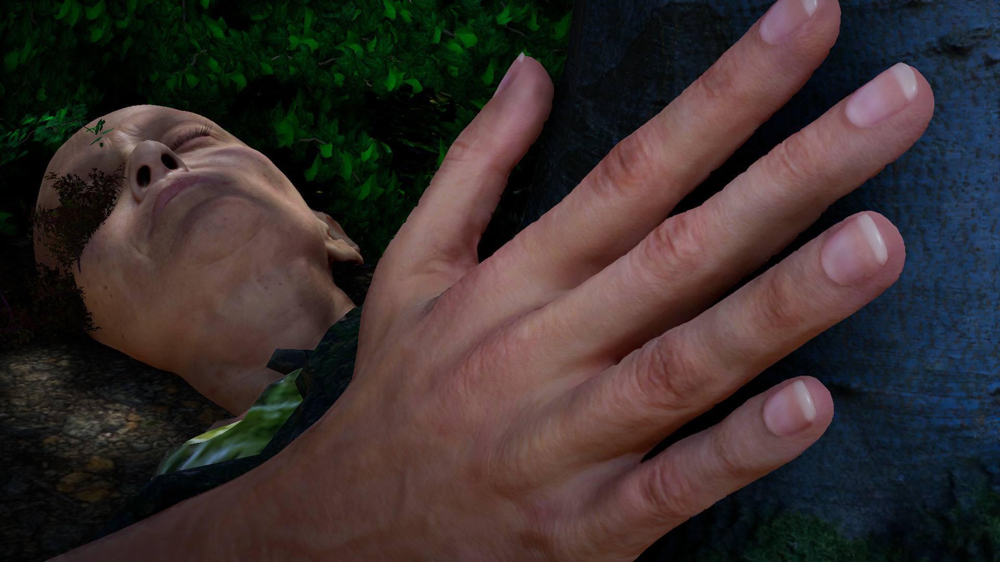

Nature Human stages a dialogue with Evangeline, a speculative virtual human speaking from the year 2050. The installation uses an interactive character to make a proposed ecological future approachable through an encounter rather than an explanatory film.
Visitors meet and converse with a virtual figure who describes a world where humans have begun to merge with nature. The story unfolds through the character's presence and responses.
I directed and technically developed the virtual-human installation, shaping its speculative narrative, digital figure, and audience-facing interaction for gallery presentation.
I chose a single character as the interface to an imagined world. That lets speculative worldbuilding remain personal and conversational instead of expanding into an unmanageable simulated environment.

